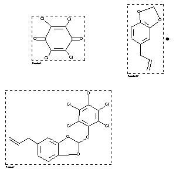

|  |
| FA | RX(1); FLST(1); RX(1) |
Reaction (1 of 1)
| Reaction ID | 4153086 |
| Reactant BRN | 393006; 136380 |
| Reactant | 2,3,5,6-tetrachloro-[1,4]benzoquinone; 5-allyl-benzo[1,3]dioxole |
| Product BRN | 7226817 |
| Product | 5-allyl-2-(4-hydroxy-2,3,5,6-tetrachlorophenoxy)-1,3-benzodioxole |
| No. of Reaction Details | 1 |
Reaction Details (1 of 1)
| Reaction Classification | Preparation |
| Yield | 94 percent (BRN=7226817) |
| Solvent | benzene |
| Time | 8 hour(s) |
| Other Conditions | Irradiation |
| Citation Pointer | 5959025; Journal; Yan, Bao-Zhen; Zhang, Zhao-Guo; Yuan, Han-Cheng; Wang, Long-Cheng; Xu, Jian-Hua; JCPKBH; J.Chem.Soc.Perkin Trans.2; EN; 12; 1994; 2545-2550; |
Reference (1 of 1)
| Citation Number | 5959025 |
| Document Type | Journal |
| Authors | Yan, Bao-Zhen; Zhang, Zhao-Guo; Yuan, Han-Cheng; Wang, Long-Cheng; Xu, Jian-Hua |
| CODEN | JCPKBH |
| Journal Title | J.Chem.Soc.Perkin Trans.2 |
| Language Code | EN |
| Number | 12 |
| Publication Year | 1994 |
| Page | 2545-2550 |